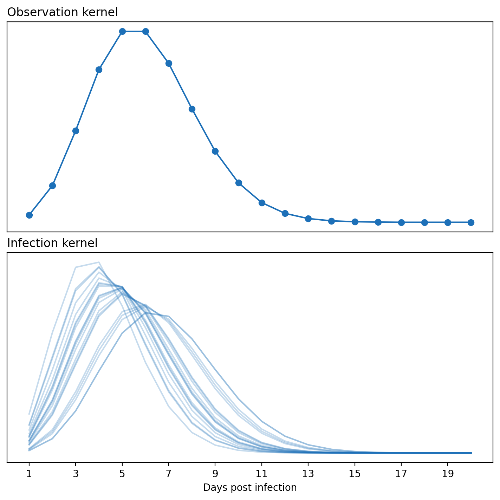
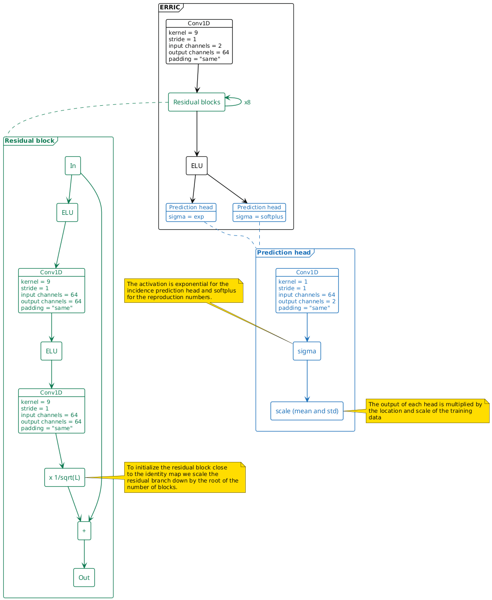
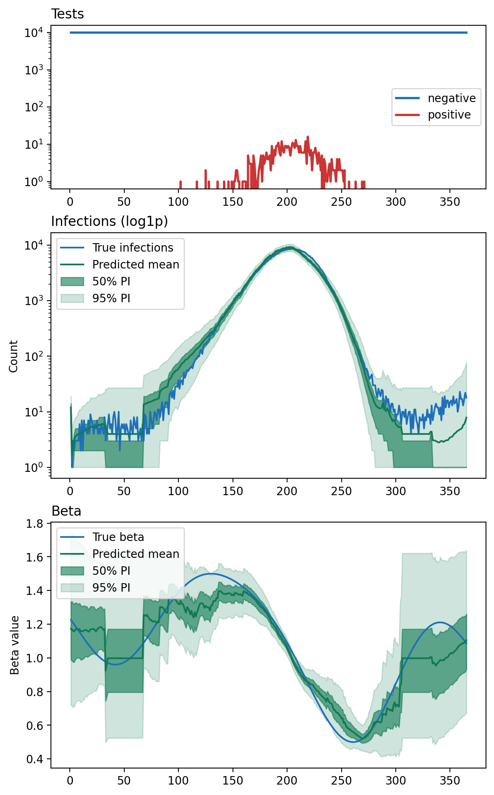

AANN 03/06/2026
Table of Contents
ERRIC the estimator: part 2
Overview
Welcome back for part 2 of ERRIC the estimator1, here we will teach ERRIC to quantify the uncertainty in its predictions. To be honest, most of the effort went into getting the numerics to work! In part 1 ERRIC learned to generate point estimates of the incidence and reproduction number. In the upcoming part 3, we will look at incorporating additional detail in to the epidemiological model and refining the estimates.
Background
Renewal models
Before we get into the details of ERRIC, let's recap our renewal model. The number of infections \(I_t\) on day \(t\) has the following distribution:
\[ I_t\sim\text{Pois}\left(\beta_{t}\sum_{i=1}^{M}\lambda_{i}I_{t-i}\right) \]
where \(\mathbf{\lambda}=(\lambda_1,\ldots,\lambda_M)\) is the generation interval distribution, and \(\beta_{t}\) is a common time varying parameter describing the average number of new infections per individual.
As an observation model we will consider a survey of the population in which \(N_{\text{test}}\) people are selected randomly from the population of size \(N_\text{pop}\) and tested. This is not wildly dissimilar for the ONS-CIS. Under the model, the daily number of positive tests \(Y_t\) has the following distribution:
\[ Y_t\sim\text{Binom}\left(N_{\text{test}},\frac{\sum_{i=1}^{M}v_{i}I_{t-i}}{N_{\text{pop}}}\right) \]
where \(v_{i}\) is the probability of testing positive for infection \(i\) days after you were infected (assuming there are no false-positives).
Previously, we had assume that both \(\lambda\) and \(v\) are known. There is substantial uncertainty, particularly in \(\lambda\), so we should really account for this in our modelling. To do this, we will randomize this kernel in each of the simulations so that the posterior predictions also account for the uncertainty in this parameter. Figure 1 shows the known \(v\) and some prior samples of \(\lambda\). To be precise, to get the elements of \(\lambda\) for a single simulation we used the following:
- \(\mu_{\lambda}\sim\text{U}(3.0, 6.0)\)
- \(\lambda\leftarrow\texttt{dpois}([0,\ldots,19],\mu_{\lambda})\)
- \(\lambda\leftarrow\lambda/\texttt{sum}(\lambda)\)

Figure 1: The observation kernel is assumed known, but the infection kernel is given a mean that varies from approximately three to six days.
Variational inference
Variational inference is a surprisingly simple approach to Bayesian simulation-based inference. You can make a KL-divergence argument for why this is a theoretically sensible approach, but the intuition is simple, you want to choose a distribution that makes the observed data as likely as possible. If you would like more detail about this, Zammit-Mangion et al (2025) has a highly readable section on Approximate Bayesian Inference via KL-Divergence Minimization.
To be a little more precise, in this method you select a family of distributions to approximate the posterior with, given some samples from that distribution, you then want to select the family member that maximizes the likelihood of those observations. The loss function is simple and can be derived in the following steps:
- select a suitable parametric family for each quantity we want to predict
- use a prediction head that returns predictions of the parameters of this distribution
- compute the negative log-likelihood of the training data under the predicted distribution and return that as the loss.
Example
Architecture and loss
We used a residual convolutional neural network to predict the posterior distribution of the quantities we are interested in. We approximated the posterior distributions with negative binomial distributions in the case of population counts and gamma distributions in the case of the reproduction numbers. Figure 2 shows the structure of the network. Note the black frame labeled "ERRIC" is the full network, the blue and green frames just zoom in on the details in some of the components. The attentive reader will also note that there is an additional convolutional layer in each residual block, so the resulting network is has about twice as many layers as the previous version.

Figure 2: The architecture of ERRIC, (if you like this figure, you might like this post.) The green frame shows the details of a single residual block. The initial Conv1D is needed as the number of input channels may differ from the number of internal channels. Depending upon the distribution of the quantity of interest, the prediction head will be transformed in a different way: we use an exponential activation for population sizes and softplus for the reproduction number.
Since the incidence is non-negative count data which can vary substantially, we used negative binomial distributions for the predictions of these values. For the reproduction number, we used gamma distributions. Because the values can be \(\gg1\) we use an exponential transformation and scale the resulting predictions of the mean and standard deviation by the empirical values in the training data.
A technical aside on initialization, scaling
To enable this network to train with more than a handful of layers I needed to be careful with the initialization in the residual blocks. For the input layer and the prediction heads the He initialization worked without issue, but for the residual blocks this became problematic as the number of layers increased. Part of the solution was the tweak to the scaling and initialization:
- scale the residual branch by a factor of \(1/\sqrt{L}\) where there are \(L\) residual blocks, so that it is closer to the identity function;
- initialize the biases to zero so each block starts near to the identity function.
These changes to the initialization enabled training networks far
deeper than had been possible before and without needing to include
normalization layers. In the prediction heads, we scale the
predictions by the empirical mean and standard deviation of the
quantities so that the predictions start on the correct scale. In
playing around with deeper networks, I was able to get models training
with tens of layers; without these tweaks networks only a handful of
layers deep wouldn't initialize to anything sensible (in the sense
that they would output the value NaN.)
Predictions
Figure 3 shows some of the predicted point estimates from ERRIC. These predictions are still essentially drawing from the prior at some points, but the additional depth of the network seems to help with this a bit as the receptive field grows with the number of layers.

Figure 3: Input data and resulting predictions of posterior distributions. Tests shows the input data, a daily time series of the number of positive and negative tests. Infections shows the true daily incidence in blue and the estimate of the posterior distribution of this. Beta is the reproduction number through time and the posterior distribution of this quantity. The credible intervals should only be interpretted marginally, so the coverage is a little difficult to assess.
Discussion
Summary
In this post we have taken a simple point prediction neural estimator and extended it to produce predictions of the full posterior predictive distribution2 under some parametric assumptions. We have also resolved some numerical issues enables this to scale to much deeper networks. In the next post (see part 3) we will incorporate more detail into the epidemiological model and refine our the predictive model.
Receptive fields, dilation and depth
Both here and in part 1 ERRIC seems to struggle to generate estimates different from the prior when there are long stretches of time without positive tests, i.e. it defaults to predicting the prior distribution. I suspect this is because when there isn't much signal coming in from the data, the lowest loss option is to just return the prior (although I can't see a trivial way to formalize this argument.) Anyway, this may be because the CNN has a limited receptive field, because information only propagates a certain number of pixels per layer of the network there isn't enough information sharing. Two ways to overcome this are increasing the depth of the network, and increasing the breadth of the kernel (either by using a larger kernel or through something like dilation).
Numerics, AI, and my reluctant acceptance of clipping
Conceptually, getting ERRIC to produce predictions of the posterior
distribution was easy. Most of the time working on this post was spent
getting the training to run smoothly, and preventing the model from
drifting into a region of parameter space where it could return NaN
(which stemmed from an exponential or logarithm returning infinite
values). Reading about residual network initialization and helped a
bit, but I need to acknowledge the contributions of Chatty-G here. It
turns out AI is very good at spotting potential numerical issues in
code.
Here are the changes to the code that ended up helping the most. I'd like to think these are here in case someone else finds themselves pulling their hair out trying to fix numerical issues, but I have a sneaking suspicion it will be me…
- Clipping the argument to an exponential, using \(\exp\{\texttt{clip}(x,-20,20)\}\) instead of \(\exp\{x\}\) where \(x\) is the output of a neural network3. This became important in long training runs.
- Scaling the residual branch by a factor of \(1/\sqrt{L}\) and initializing the biases at zero in the residual blocks allowed me to move to much deeper networks.
- Working in log-space and adding fudge factors of \(10^{-4}\) to ensure values are positive when they need to be, even when you think this borders on paranoia, still do it!
Thanks
Thank you for reading this post. Please get in touch if you have any feedback :)
Postscript
In the postscript of part 1, I described using a very small streamlit app as a lightweight, but highly customisable, dashboard for monitoring these experiments. It has continued to be useful and accumulate more views into the problem, as Yogi Berra said, "You can see a lot, just by looking."
Footnotes:
Recall ERRIC stands for Estimating Renewal with ResIdual Convolutional networks
Yes, frustratingly "predict" does appears twice in that name. I use "prediction" when talking about the output of a neural network, and it is standard to refer to the posterior distribution over quantities that aren't parameters as a posterior predictive distribution.
Yes, I know it seems risky to use the exponential here, but the variable needed to take a large range of non-negative values, even when multiplied by a standard scale.